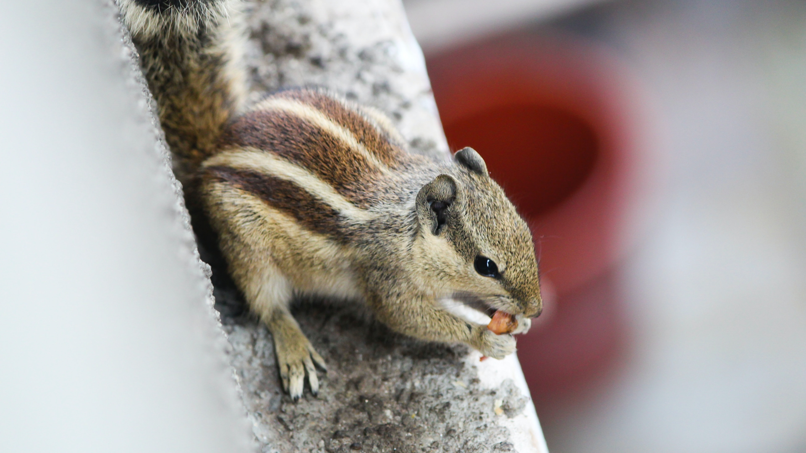

В таежных глухих лесах, на зелёных полянках, окружённых высокими деревьями, можно встретить маленьких зверьков, оживляющих лесную глушь и тишину. Эти зверьки - бурундуки. Бурундук - проворный и ловкий, похож на маленькую белку. Живёт он под деревьями, в земляных неглубоких норах.